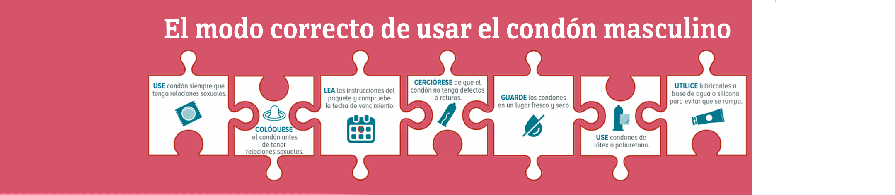

Preservativos
De penes y vagina
Como colocarlos y para que sirven.
Algun textito de porque no hay que tener bendiciones
Preservativo de vagina
Ventajas y desventajas
Preservativo de pene

Ventajas y desventajas
Encuesta
Decidimos hacer esta página web informativa sobre los preservativos ya que realizamos una encuesta y notamos que en nuestro país hay una desinformación acerca de los preservativos para vagina, pero sin dejar conocido preservativo de pene de lado.